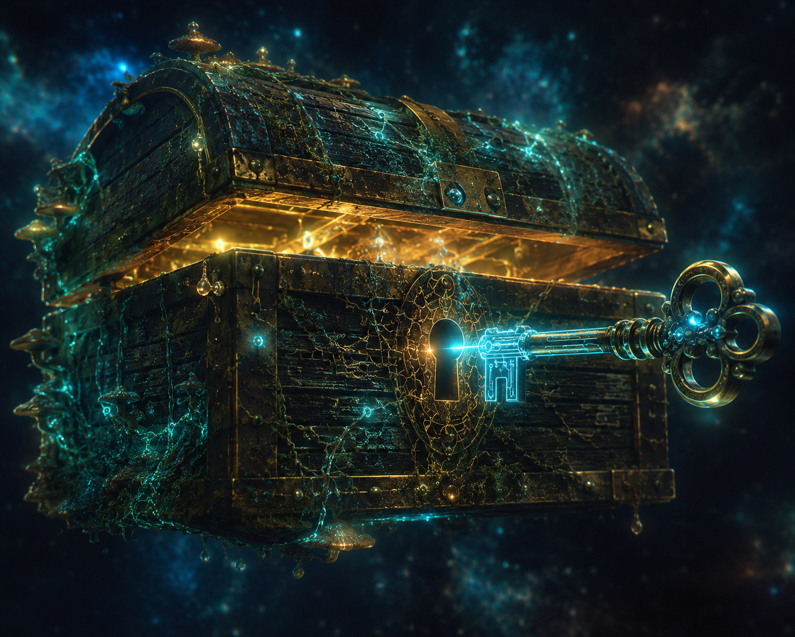

SB·KIMTool·Point
Drei Schichten, drei Seiten. Wähle eine — du kannst jederzeit oben wieder wechseln. Optik an Sage angelehnt, eigene neutrale Identität.

Werkzeug-Truhe — öffnen
Schicht 1
Modell
Aufgezeichneter, headless Node-Lauf als Agenten-Board. Die Seite spielt ihn ab — sie führt das Modell nicht live aus.
→ ansehen Schicht 2Werkzeugkiste
Drei Stufen (Basic · Pro · Profi). Jede Kachel mit Doppel-Status und Erklärung. Hier wachsen einzelne Tools heran.
→ öffnen Schicht 3Markt
PWA-Tool-Vermittlung. Schaufenster der Live-Endknoten zum Andocken. Suche bewusst noch nicht gebaut.
→ stöbern